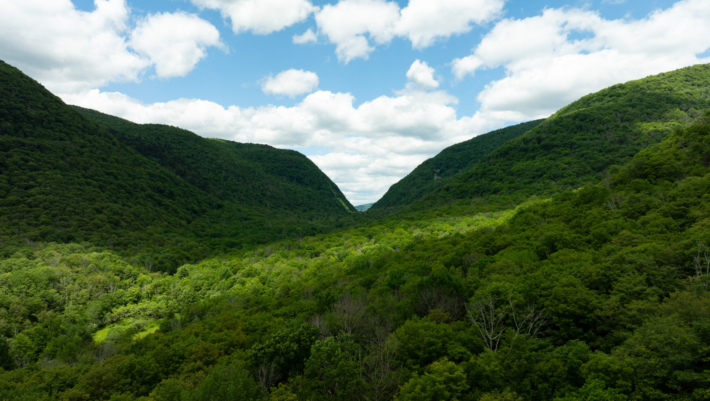

About Edgewood
Edgewood is a 22-acre wilderness retreat in the heart of the Catskills.
We believe in the power of place to help us slow down, reconnect, and remember what matters. Edgewood was created as a sanctuary for nature, for creativity, and for community.
Every stay supports our ongoing work in ecological restoration and land stewardship, ensuring this land remains wild for generations to come.

A living landscape.
Edgewood is more than a place to stay. It is a landscape to experience: forest, meadow, water, paths, cabins, and quiet places to disappear for a while. We are continuing to restore and shape the property with the lightest possible touch.